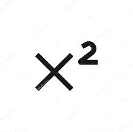
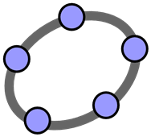

Portifólio de Matemática - Ciclo 2
Nome: Luiz Eduardo Gallina Sfredo
Turma: EMI - 1
Matéria: Matemática e Desenvolvimento Web
Professores: Valéria Lessa, Ernani Gottardo
Introdução
Para o portifólio deste ciclo, irei pegar a estrutura que foi usado no anterior, dividindo os conteúdos em que mais foi aproveitado e aprendido,
assim como os conteúdos que tiveram um entendimento mais complicado.
Também contando com a sessão de auto-avaliação no final das duas partes posteriores.
Conteúdo com maior Aproveitamento
Conteúdo com maior Dificuldades

Auto-Avaliação
